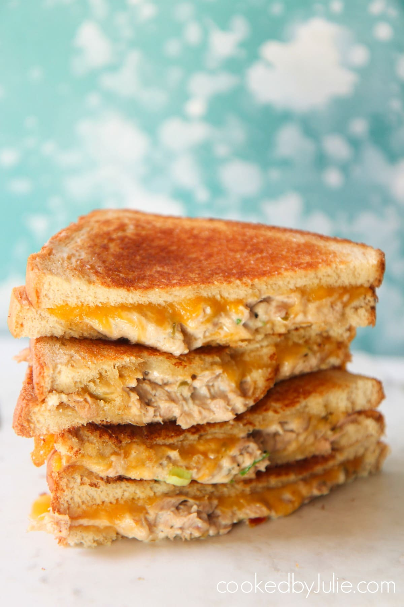
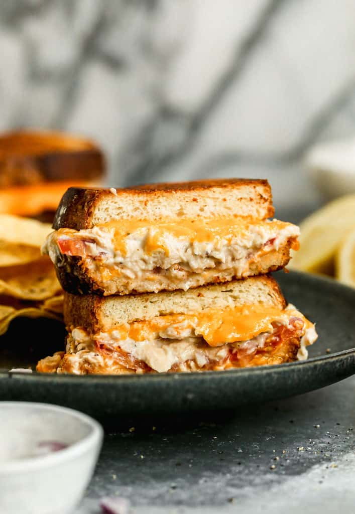

Tuna Melt

Description
This recipe is a quick, health family favorite! Quick, easy, and customizable, it will be a favorite that the whole family will love! Keep it simple, or jazz it up with any toppings of your choice.

Ingredients
- 12 ounces canned albacore white tuna, packed in water , drained
- 1/3 cup mayonnaise , more to taste (or substitute half mayo, half plain Greek yogurt)
- 2 Tablespoons finely chopped red onion
- 2 Teaspoons fresh lemon juice
- Pinch dried oregano leaves
- salt and pepper , to taste
- 4 slices thick cut white sandwich bread
- 4 slices cheese - cheddar, provolone, swiss, or your favorite kind

Steps
- In a medium bowl, combine tuna, mayonnaise, onion, lemon juice, and oregano and stir until thoroughly combined. Add more mayo if you want mixture wetter. Season with salt and pepper, to taste.
- Butter outsides of bread slices. Layer tuna mixture on inside portion of bread. Add cheese, desired toppings, then another piece of cheese and top with bread.
- Heat a skillet over medium-low heat. Add sandwiches and cook until bottom bread is toasted, and cheese is warm. Flip and cook on the other side until bread is toasted and cheese has melted.
Credit
Taste Better From Scratch